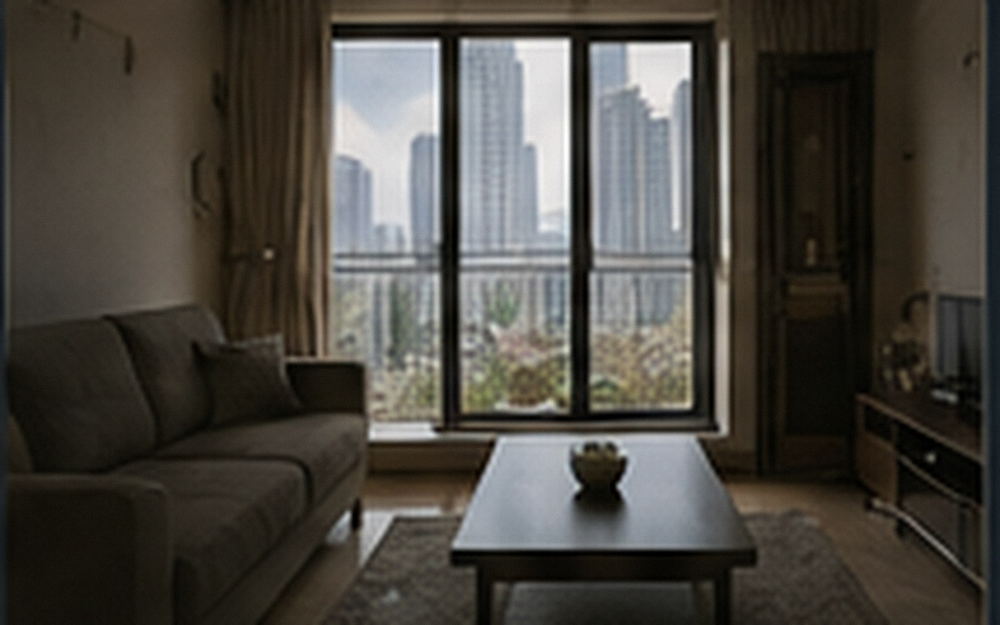

公共空间
一层公共休息区每日 07:00-22:30 开放；夜间保留自助取件与饮水区域。书桌区不接受长期占座。
社区活动以摄影、旧物交换、节气市集和公益整理为主，不要求住户参加。
近期社区内容
2023-06-24
六月窗景 · 住户作品选
三位住户记录各自窗外的夏天。
2022-12-09冬季公共区域保洁记录
走廊、镜面与公共设备的年度深度清洁。
2021-05-22邻里摄影日
社区开放日与住户合影。
2018-10-02旧宿舍更新完成
记录栖山公寓从旧宿舍到长期租赁社区的改造。
宠物与安静时段
宠物
猫、小型犬可登记。公共区域请使用牵引绳或航空箱，电梯内优先照顾不愿接触动物的住户。
安静时段
22:30-08:00 避免搬运、打孔和大音量播放。发生持续设备噪声可向物业报修。
快递
普通包裹进入一层取件区；生鲜与大件需由住户本人接收。
访客
访客登记以楼栋与目的楼层为基础，不公开住户姓名。
公告与服务
设施检修、停水和活动临时调整统一发布在社区公告。维修、失物与停车可在物业服务中查询。
社区日常
一层公共休息区每日 07:00–22:30 开放，夜间保留通行照明。阅览桌、饮水点和临时会客座位无需预约；超过六人的聚会需提前登记，以免影响相邻住户。公共区域不提供商业拍摄场地，也不接受长期物品寄存。
社区每月会安排一次小型公共活动，内容通常是旧物交换、植物养护、摄影分享或节气手作。活动照片原则上只用于社区记录，涉及清晰人脸的图片会在发布前取得授权；住户提出撤下要求后，运营人员会在常规维护周期内处理。
宠物与安静时段
已登记宠物可使用指定电梯，公共区域需牵引并及时清洁。22:00 至次日 07:00 为安静时段，搬运、打孔和大音量设备应避开这一时间。多次噪声投诉会先由管家联系沟通，再按租约规则处理。
本页面内容最后更新于 2026-08-12